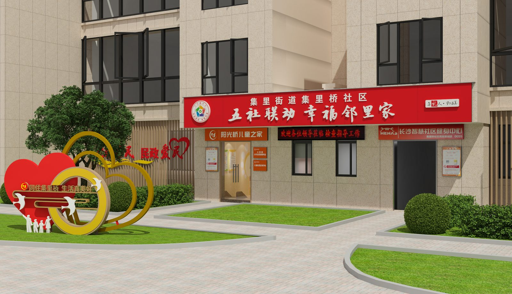
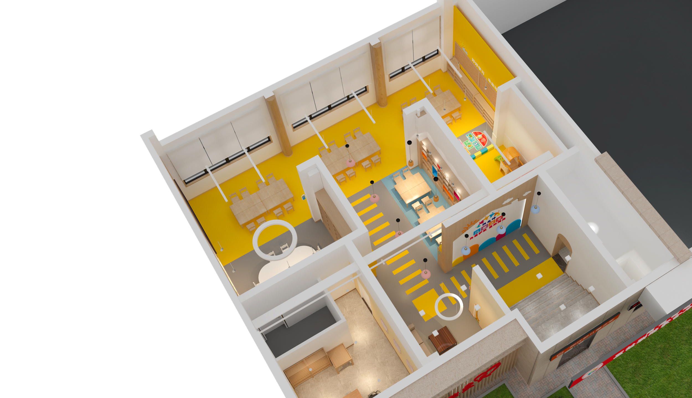
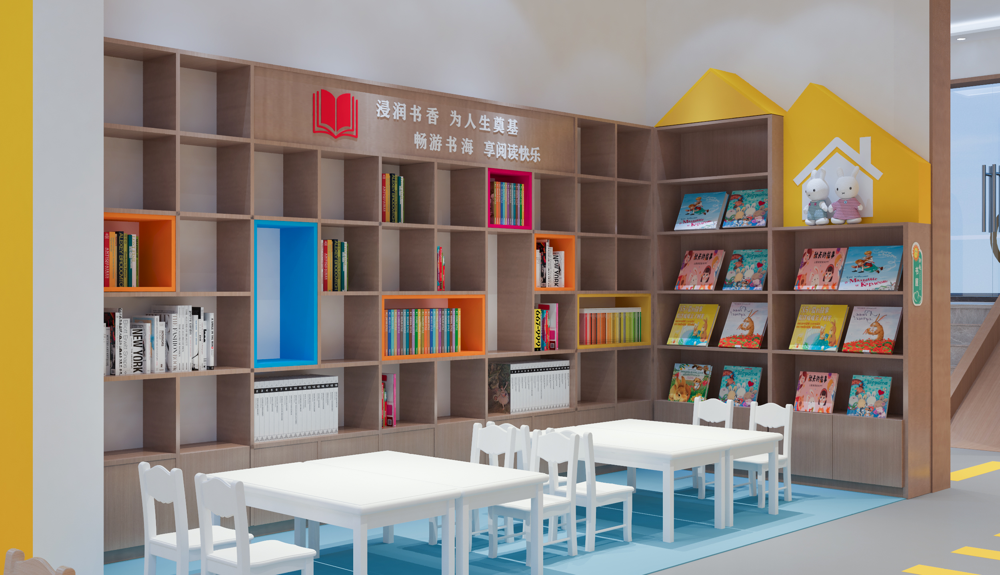
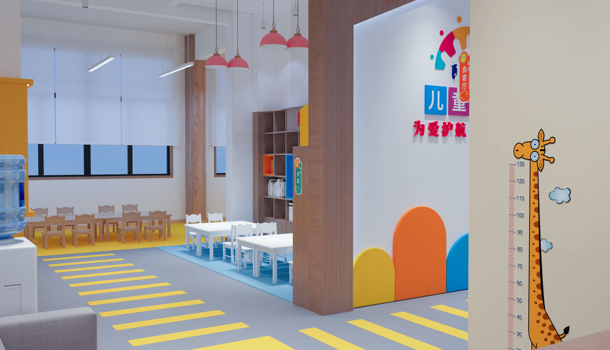
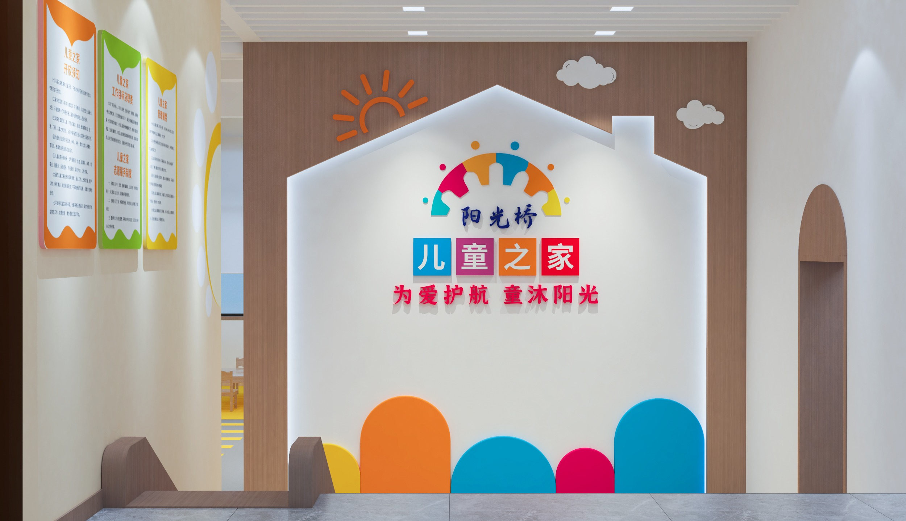
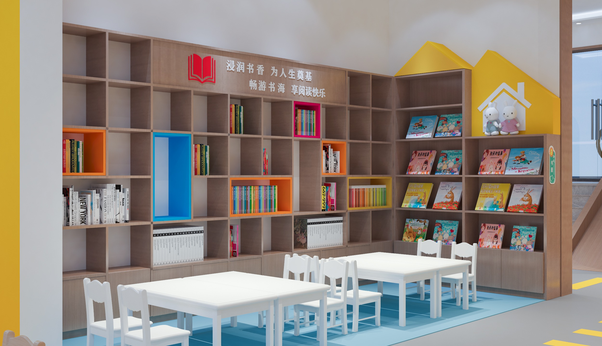
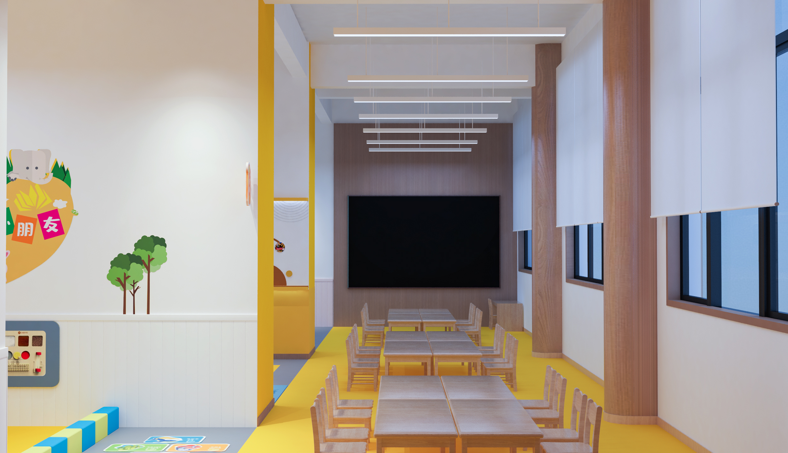
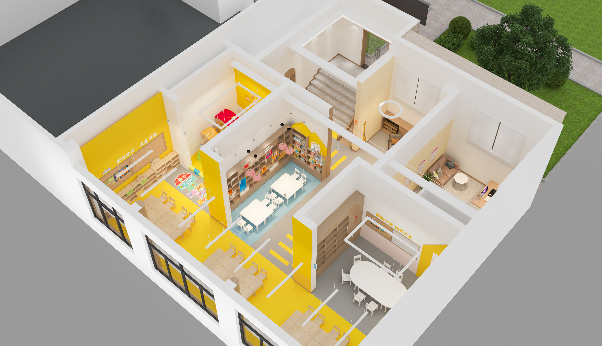

项目案例 / CASE STUDY · 02
集里桥儿童之家

让探索成为空间的一部分。
The project begins with children's scale and turns movement, curiosity and discovery into part of the spatial experience.
职责定位 / ROLE
概念与空间设计
CONCEPT & SPATIAL DESIGN
工作范围 / SCOPE
空间策略 · 概念设计 · 方案深化 · 图纸协调
Spatial strategy · Concept development · Design development · Documentation
02 / 设计策略
DESIGN STRATEGY
儿童空间并不只是缩小成人世界，而是重新组织尺度、路径与视觉关系。
通过连续而清晰的空间节点，让日常活动转化为探索过程。
SCALE · PATH · DISCOVERY

03 / 空间组织
SPATIAL ORGANIZATION
从整体布局到局部节点，功能空间围绕儿童的移动方式被重新编排， 形成开放、停留与互动之间的连续关系。


04 / 空间体验
SPATIAL EXPERIENCE
明亮的色彩、圆角界面与连续的路径共同建立儿童能够理解和参与的空间语言。



05 / 发现时刻
MOMENTS OF DISCOVERY
移动
停留
发现
MOVE · PAUSE · DISCOVER.


项目总结 / PROJECT SUMMARY
不是替孩子定义世界，
而是 为探索留下可能。
The goal is not to define a world for children, but to leave room for them to discover one.